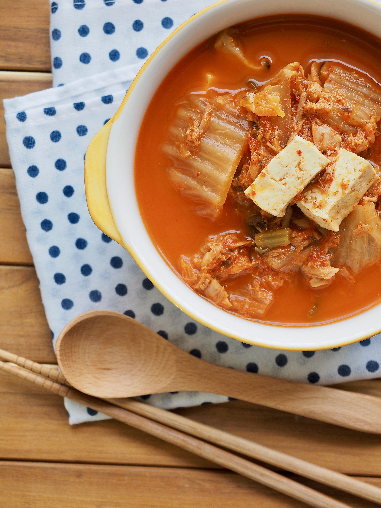

자취생들
안주 [탕, 볶음]
어묵탕
닭똥집볶음
차돌숙주볶음
안주 [구이, 기타]
콘치즈
라면땅
두부김치
크리스피치킨
달콤주
추천메뉴

출처 : 크라우드픽
#김치찌개 #초간단 김치찌개 #추천메뉴 #건강한한끼
쉽고 건강하게 먹을 수 있는 초간단 김치찌개
출처 : 네이버 블로그 '스카이 윤'
#스팸돈부리 #스팸의변신 #추천메뉴 #맛있는한끼
스팸 하나로 편하게 맛있는 한끼 먹기
#알리오올리오 #기본파스타 #추천메뉴 #마늘의변신
기본 중의 기본 파스타, 맛있게 먹자
#콩나물국 #해장국 #추천메뉴 #얼큰얼큰
해장용, 식사용 둘 다 가능한 만능콩나물국